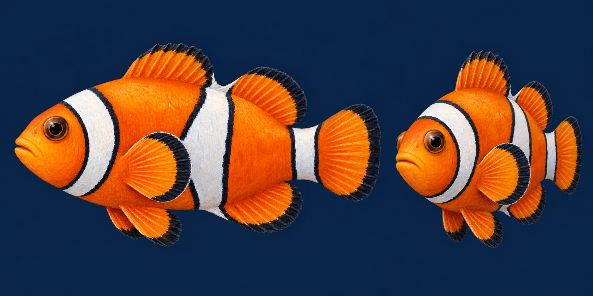

MỘT SINH VẬT. NHIỀU GÓC NHÌN.
Nemo, sống động hơn.
Một chú cá nhỏ, từ nét vẽ đến chuyển động.
Thiết bị chưa hiển thị được cảnh 3D. Bạn thử bật tăng tốc đồ họa trong trình duyệt.
Đưa chuột gần hoặc chạm Nemo · Kéo để xoay góc nhìn
Nemo · tạo hình vẽ trên khối 3D
Xem ngoại hình đứng yên. Kéo để xoay cá, hoặc chọn góc nhìn bên trên.
Đối chiếu với mẫu ngoại hình đã chốt

Ảnh mẫu tham chiếu. Cá phía trên là mô hình 3D có thể xoay và chuyển động.